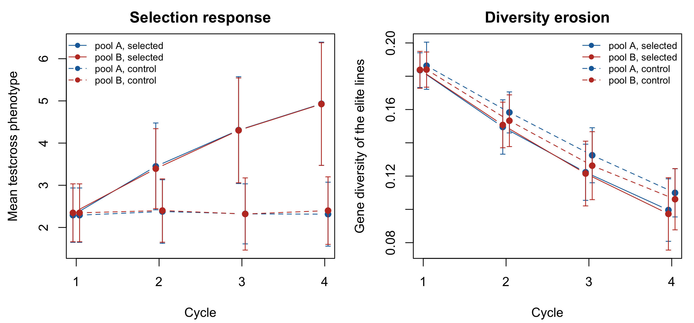

fp <- alphasimr_founder_pools(rrs_cfg)
c(pool_A = fp$pop_A@nInd, pool_B = fp$pop_B@nInd, markers = rrs_cfg$n_chr * rrs_cfg$seg_sites)
#> pool_A pool_B markers
#> 12 12 750
alphasimr_gd(fp$pop_A, fp$SP)
#> [1] 0.2234213
alphasimr_gd(fp$pop_B, fp$SP)
#> [1] 0.22882417 A realistic corn pipeline: AlphaSimR and reciprocal recurrent selection
Chapter 4 built the {X, f, hybrids, fL} contract with a deliberately fast simulator: Balding-Nichols allele frequencies, independent markers, no recombination, no dominance. That is enough to exercise the diversity and selection machinery, but it is not how a two-heterotic-pool corn programme is actually run. This chapter reproduces the real method – reciprocal recurrent selection (RRS; Comstock et al. (1949)) – with AlphaSimR’s founder-haplotype and meiosis engine (Gaynor et al. (2021)), and shows that the same contract comes out the other end, unchanged, so stage2_select() runs on it exactly as it does on the book’s own simulated data.
RRS is the standard commercial scheme for two heterotic pools: each pool is improved using the other pool as tester. Doubled-haploid lines are drawn from pool A, testcrossed to pool B (and vice versa), the testcross hybrids are phenotyped, and the lines with the best mean testcross performance – a proxy for general combining ability, GCA – are recombined to found the next cycle’s pool. Elite lines from both pools, at the end, are crossed directly to produce the commercial hybrids. It is exactly the asymmetry Chapter 18 argues for: selection happens on the hybrid, recycling happens within pool.
The engine lives in the package, R/13_alphasimr_bridge.R: rrs_config, alphasimr_founder_pools(), alphasimr_rrs_cycle(), alphasimr_make_hybrids() and alphasimr_to_stage1(), wrapped by alphasimr_pipeline(). AlphaSimR is a Suggests dependency, guarded exactly like quadprog and highs elsewhere in the package – this chapter, and only this chapter, needs it.
7.1 Founding two pools with a real coalescent history
AlphaSimR::runMacs2(..., split = ) draws founder haplotypes from a population-split coalescent history: one ancestral population, then two demes diverging split generations ago. That is the realistic analogue of simulate_lines()’s Balding-Nichols draw in Chapter 4, and it comes with what the book’s own simulator cannot give: actual linkage and recombination.
alphasimr_gd() is 1 - mean(f), the exact definition gene_diversity() uses, computed directly from AlphaSimR’s genotype pull – so the two pools are already comparable to every diversity number in the rest of the book on the same scale.
runMacs2(nInd = , nChr = , segSites = , split = ) is what actually draws the haplotypes: a single ancestral population runs backward-in-time coalescent simulation, splits into two demes 100 generations ago, and the requested nInd individuals are sampled across both demes – the first n_pool_A become pool A, the rest pool B. There is no separate marker panel: SP$addTraitAD(nQtlPerChr = seg_sites, ...) makes every one of the 150 segregating sites per chromosome a QTL, so the same sites that carry the trait are the ones pullSegSiteGeno() reads for X, f and fL throughout this chapter.
Each pool also carries an additive-and-dominance trait (SP$addTraitAD(meanDD = 0.4, varDD = 0.1)). Dominance is what makes testcross selection meaningful at all: without it, a line’s performance in cross would just be its own breeding value, and there would be nothing for RRS to exploit that plain within-pool selection could not already get. Chapter 9 covers why dominance is the mechanism.
7.2 One cycle
cy1 <- alphasimr_rrs_cycle(fp$pop_A, fp$pop_B, fp$SP, rrs_cfg)
fmt(cy1$summary, 4)| mean_tc_A | mean_tc_B | gd_A | gd_B |
|---|---|---|---|
| 1.9078 | 2.3846 | 0.1827 | 0.1893 |
alphasimr_rrs_cycle() runs the same six steps for each pool, symmetrically (pool A tested on B, pool B tested on A):
- Double haploids.
makeDH()draws 3 doubled-haploid, fully homozygous lines from each individual in the current pool – at book scale, 12 parents x 3 DH each = 36 DH lines per pool, per cycle. - Pick reciprocal testers. The first 2 individuals of the opposite pool are used as testers – a fixed slice, not a random or merit-based draw. This is the RRS-defining move: a line’s value is judged by its cross onto the other heterotic pool, not by itself.
- Testcross and phenotype.
hybridCross()forms the full factorial between every DH line and every tester – 36 DH x 2 testers = 72 testcross hybrids per pool – andsetPheno()adds phenotyping error sized to hit the heritability set earlier bySP$setVarE(h2 = ). - GCA proxy. Testcross phenotypes are grouped by DH-line parent (
tapply(pheno[, 1], mother, mean)) and averaged across the 2 testers each line was crossed to – a general combining ability (GCA) estimate, following Comstock et al. (1949). Only trait 1 is used for this ranking even though this chapter’s config simulates 2 traits per line; the second trait rides along inX/hybridsbut plays no role in selection here. - Keep the elites. The 6 DH lines per pool with the highest mean testcross phenotype are kept as
elite_A/elite_B. - Recombine.
randCross()random-mates the elites back up to 12 individuals, founding the next cycle’s pool A (symmetrically for B).
elite_A/elite_B are what step 6 mates – and, in the last cycle, what the final commercial cross uses instead of being recombined again (see below). The cycle’s summary mixes two different populations on purpose: mean_tc_A/mean_tc_B average over all DH lines tested that cycle (the population’s testcross performance before selection), while gd_A/gd_B are gene diversity of only the 6 surviving elites (the population after selection). That asymmetry is exactly what the next section plots – response measured pre-selection, diversity measured post-selection.
7.3 The trajectory across cycles
alphasimr_pipeline() just runs alphasimr_rrs_cycle() in a loop for 4 cycles, carrying pop_A/pop_B forward from one cycle’s output to the next’s input – there is no reseeding inside the loop, only the founder draw at the start is seeded, so the whole trajectory is one continuous random process. Only the last cycle’s elite_A/elite_B – not an intermediate cycle’s – go on to found the commercial hybrid pool below; every earlier cycle’s elites are spent entirely on randCross()ing the next cycle’s pool.
res <- alphasimr_pipeline(rrs_cfg)
fmt(res$cycles, 4)| cycle | mean_tc_A | mean_tc_B | gd_A | gd_B |
|---|---|---|---|---|
| 1 | 2.5158 | 3.8088 | 0.1778 | 0.1837 |
| 2 | 4.5614 | 4.3912 | 0.1163 | 0.1457 |
| 3 | 6.5698 | 6.6703 | 0.0886 | 0.1090 |
| 4 | 8.0586 | 7.6932 | 0.0814 | 0.0881 |

Both pools respond – mean testcross phenotype rises – and both pools lose gene diversity in their retained elite lines, cycle over cycle. Nobody pays this cost for its own sake: Chapter 18 makes the same point with the package’s own faster simulator, over a longer trajectory and a grid of selection intensities. This chapter shows it holds with actual meiosis and dominance behind it too.
7.4 The final hybrid pool through stage2_select(), unchanged
alphasimr_make_hybrids() testcrosses the final cycle’s elites directly against each other – a full factorial diallel between the 6 pool-A elites and 6 pool-B elites, so 36 commercial hybrids – and phenotypes them the same way every testcross in this chapter was phenotyped. alphasimr_to_stage1() then does the bookkeeping that makes this look like any other stage-1 output: it remaps AlphaSimR’s internal line ids into the 1..n_A, n_A+1..n_A+n_B convention hybrids$line_A/line_B and fL use elsewhere in the book, and builds fL by stacking the elite lines from both pools’ genotypes into one matrix and computing a single joint coancestry matrix over all of them – not two separate per-pool matrices – which is what lets theta_pools() and the rest of the pipeline index into pool A and pool B lines with one consistent numbering.
st1 <- res$stage1
dim(st1$X)
#> [1] 36 750
sel <- stage2_select(st1$X, st1$f, st1$hybrids, n_sel = 8, fL = st1$fL)
#> [1/4] null distribution by resampling (B = 2000 cheap, 200 full)...
#> GD reference = 0.24461 (sd 0.00310)
#> Monte-Carlo s.e. 6.9e-05 -> alpha differences below 0.028% are noise
#> bias if using the population as reference: 1.76%
#> [2/4] maximum attainable alpha (pure truncation) = 4.49%
#> [3/4] warm start (greedy) and DE per scenario...
#> DE_alpha_0.00 index 1.114 | alpha achieved -0.479% | Ns 0.6629 | Ne_par 9.8
#> DE_alpha_1.12 index 1.173 | alpha achieved 1.050% | Ns 0.6597 | Ne_par 8.5
#> DE_alpha_2.24 index 1.173 | alpha achieved 1.050% | Ns 0.6597 | Ne_par 8.5
#> DE_alpha_3.36 index 1.219 | alpha achieved 2.894% | Ns 0.6558 | Ne_par 8.0
#> DE_alpha_4.49 index 1.270 | alpha achieved 4.486% | Ns 0.6524 | Ne_par 6.7
#> [4/4] metrics per scenario...
#> F_hom is what the constraint pins; F_drift is what it does not:
#> DE_alpha_0.00 F_hom +0.0243 | F_drift 0.0089 | gap +0.0154 | GD_BS 0.1689
#> DE_alpha_1.12 F_hom +0.0485 | F_drift 0.0180 | gap +0.0305 | GD_BS 0.1698
#> DE_alpha_2.24 F_hom +0.0485 | F_drift 0.0180 | gap +0.0305 | GD_BS 0.1698
#> DE_alpha_3.36 F_hom +0.0909 | F_drift 0.0320 | gap +0.0589 | GD_BS 0.1769
#> DE_alpha_4.49 F_hom +0.1091 | F_drift 0.0502 | gap +0.0588 | GD_BS 0.1788
#> ref_truncation F_hom +0.1091 | F_drift 0.0502 | gap +0.0588 | GD_BS 0.1788
#> ref_trunc_cap F_hom +0.1091 | F_drift 0.0502 | gap +0.0588 | GD_BS 0.1788
#> ref_max_div F_hom -0.0571 | F_drift 0.0194 | gap -0.0766 | GD_BS 0.1631
#> ref_random F_hom +0.0536 | F_drift 0.0210 | gap +0.0327 | GD_BS 0.1723
fmt(sel$metrics[, c("scenario", "alpha", "GD", "GD_BS", "F_ST", "index")], 4)| scenario | alpha | GD | GD_BS | F_ST | index |
|---|---|---|---|---|---|
| DE_alpha_0.00 | -0.0048 | 0.2458 | 0.1689 | 0.6873 | 1.1139 |
| DE_alpha_1.12 | 0.0105 | 0.2420 | 0.1698 | 0.7017 | 1.1734 |
| DE_alpha_2.24 | 0.0105 | 0.2420 | 0.1698 | 0.7017 | 1.1734 |
| DE_alpha_3.36 | 0.0289 | 0.2375 | 0.1769 | 0.7447 | 1.2188 |
| DE_alpha_4.49 | 0.0449 | 0.2336 | 0.1788 | 0.7654 | 1.2701 |
| ref_truncation | 0.0449 | 0.2336 | 0.1788 | 0.7654 | 1.2701 |
| ref_trunc_cap | 0.0449 | 0.2336 | 0.1788 | 0.7654 | 1.2701 |
| ref_max_div | -0.0335 | 0.2528 | 0.1631 | 0.6450 | -0.3094 |
| ref_random | 0.0104 | 0.2421 | 0.1723 | 0.7119 | 0.0580 |
Nothing here is AlphaSimR-specific: stage2_select() never sees where X, f, hybrids and fL came from, only that they satisfy the contract stage 1 promises. GD_BS, the between-pool divergence that carries the heterosis signal (Chapter 11), is computed from fL exactly as it is everywhere else in the book.
7.5 Assumptions, and what this adds over Chapter 4
What is more realistic here. Actual recombination and linkage (a genetic map per chromosome, not independent markers), a dominance-driven trait so testcross selection has something real to select on, and multi-generation recurrent selection rather than one static pool.
What is still simplified. Testers are a small fixed subset of the opposite pool (2 individuals) taken by index, not chosen at random or by merit, and not the single unrelated inbred tester a real programme would typically use – a fixed pool slice makes the same testers reused every cycle, which a production programme would treat as a confound; there is one phenotyping environment (setPheno()’s error variance, no genotype-by-environment term); the population-split coalescent history (runMacs2(split = )) is a stylised divergence process, not calibrated to a named heterotic-pool pair; doubled-haploid production is instantaneous, skipping the field seasons a real DH pipeline takes; and selection acts on trait 1 only – the 2 traits this chapter’s config simulates are all carried through X/hybrids, but only the first ever enters the GCA ranking, so the rest are along for the ride, not selected on.
Scale. This chapter runs live at a book scale (12 + 12 founders, 750 markers, 4 cycles) – AlphaSimR is fast enough at this size that no caching is needed, unlike the MABC scans in Chapter 6. A heavier, production-scale run is inst/scripts/run_alphasimr.R:
Rscript inst/scripts/run_alphasimr.R --test # smoke run, ~10 s
Rscript inst/scripts/run_alphasimr.R --out=DIR # full run, ~2 minIt runs alphasimr_pipeline() at a larger configuration, feeds the resulting hybrid pool through stage2_select(), and writes the cycle trajectory and selection metrics as CSVs.
7.6 Where this connects
Chapter 4 and this chapter build the same three-object contract from two different generative models – the fast one and the realistic one – which is the point of drawing that seam where the book does: everything past it, build_ctx() through stage2_select(), cannot tell which one it is looking at. Chapter 9 explains why the dominance term here is what makes testcross selection informative at all. Chapter 18 runs the same diversity-erosion argument at a longer horizon with the package’s own faster simulator; this chapter is its cross-check against an engine with real meiosis behind it.